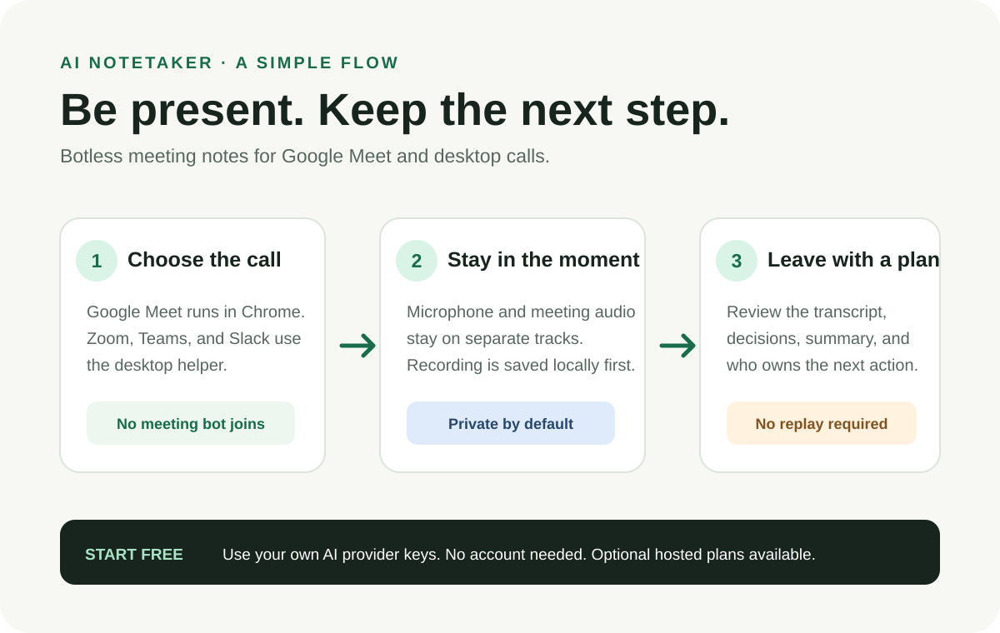
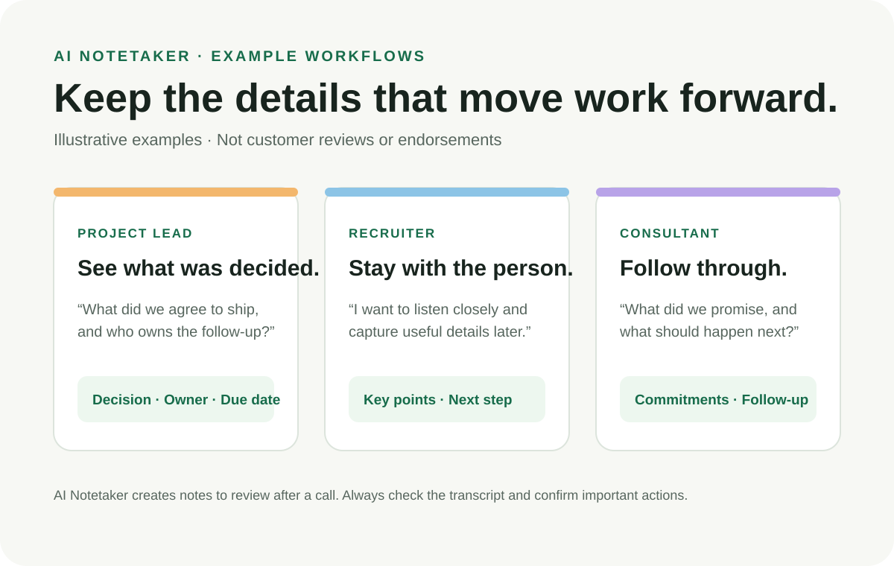

Meeting notesSAMPLE
DecisionShip the smaller update first.
A clear recap, with the details worth remembering.
Next step · Design teamShare revised screens by Thursday
A private AI meeting notetaker that captures Google Meet in Chrome and desktop calls with a native helper. No bot joins your call. Your audio is saved on your device before AI gets involved.
Free local mode · no account required · MIT licensed
Start in the browser for Google Meet. Add the small desktop companion only when your meeting happens in another app.
Capture the meeting tab and your microphone from Chrome. No desktop helper, virtual audio cable, or bot participant required.
See the Google Meet setup guide ↗Capture your microphone and system audio separately from Zoom, Teams, Slack huddles, and other desktop calls.
Choose your desktop download ↗Keep your attention with the people in the room. Come back to a transcript, summary, decisions, and action items when the call is done.
Choose a meeting style, check your mic and audio, and start notes yourself.
Mic and meeting audio stay separate. Flag a moment to find it again later.
Review the transcript and summary, mark action items, and find a detail when you need it.
Example notes in the artwork are illustrative, not customer content. Always tell participants and get the consent required by your local law and workplace policy.
Meeting notes can be easier to revisit when decisions and follow-ups are ready to find. These are example workflows, not customer stories.
Review what the team agreed to, who owns the next task, and when to check back.
Listen to the person in front of you, then revisit your own notes and follow-up questions.
Capture the agreed scope, key questions, and next actions after a working session.
Free vector infographics explain how capture works and show example workflows. Download, print, or link to them.

Three steps from choosing your call to reviewing what happens next.
Download SVG infographic ↗
Illustrative ideas for project leads, recruiters, and consultants.
Download SVG infographic ↗AI Notetaker is local-first. You pick the providers and destinations. Your recordings are written to your device before any provider call or upload.
Read the plain-language privacy noticeRaw mic and meeting audio is persisted on your device before it is sent to any provider or optional service.
In free local mode, keys stay in protected extension storage and are sent only to the provider you selected. The project does not receive them.
Use your own AI providers. Export a note to Google Drive. Self-host history if you want cross-device sync. Each is optional.
Delete meetings on-device. Separately delete data synced to a history service or provider account you chose.
You decide whether AI calls go directly to a provider you choose. The optional managed service is still in pre-launch validation.
Use the free local mode with your own transcription and summarization keys. No AI Notetaker account is needed. Provider charges are paid directly by you.
FREE · ACCOUNT OPTIONALRun the optional webapp on infrastructure you control if you want an authenticated, cross-device library. It is separate from desktop capture.
FOR SELF-HOSTINGA project-operated, paid mode is under development. It is not available for sign-up or use until production, provider, and billing checks are complete.
NOT YET AVAILABLEThe examples on this page show possible workflows; they are not customer testimonials, endorsements, or measured results.
Google Meet needs the Chrome extension only. For other desktop calls, choose the helper for your computer.
Checking the latest release…
Current installers are unsigned. Review the platform-specific first-open steps and published SHA-256 checksum before installing. A checksum detects a changed file; it does not prove who published it.
Choose your platform to see the install steps.
The Chrome extension is distributed separately. The download link will identify the Chrome Web Store listing or the manual release ZIP when available.
AI Notetaker is MIT-licensed and built in public. Try it, tell us what breaks, improve a guide, or make the next feature better for everyone.
Good first contributions include reproducing a bug, improving accessibility, clarifying setup instructions, or picking up an issue labeled for contributors.
Please never post recordings, transcripts, API keys, or private meeting data in a public issue.
Read the contribution guide, open or link an issue, and explain how you checked your change.
Keyboard use, reduced motion, readable contrast, and clear error states make the project better for everyone.
Get participant consent wherever the law or your organization requires it. The app’s reminder is not legal advice.
No. Google Meet capture runs through a Chrome extension. Desktop-call capture runs in the native helper. There is no meeting bot in your participant list.
No. You only need the Chrome extension for Google Meet. Install the desktop helper for Zoom, Teams, Slack huddles, and other desktop apps.
The local mode is free and the source is MIT-licensed. You supply your own AI provider keys and pay providers directly. An optional project-operated hosted service is not yet available.
Raw audio is saved on your device before a provider call or upload. Local mode sends audio to the providers you choose. Optional sync or export sends selected notes to destinations you choose. See the privacy notice and data handling guide.
Usually no. Supported native capture uses ScreenCaptureKit on current macOS, WASAPI loopback on Windows, and PipeWire or PulseAudio on Linux. Some setups may need a documented fallback.
No. The sample notes and workflow descriptions are illustrative examples, not testimonials or measured product outcomes.
Read the contributor guide, browse open issues, and submit a pull request. Keep private meeting data and credentials out of public reports.
No analytics or advertising scripts are installed on this site. The page does request the current public release manifest from GitHub so it can display the right download and checksum. See the website privacy notice.